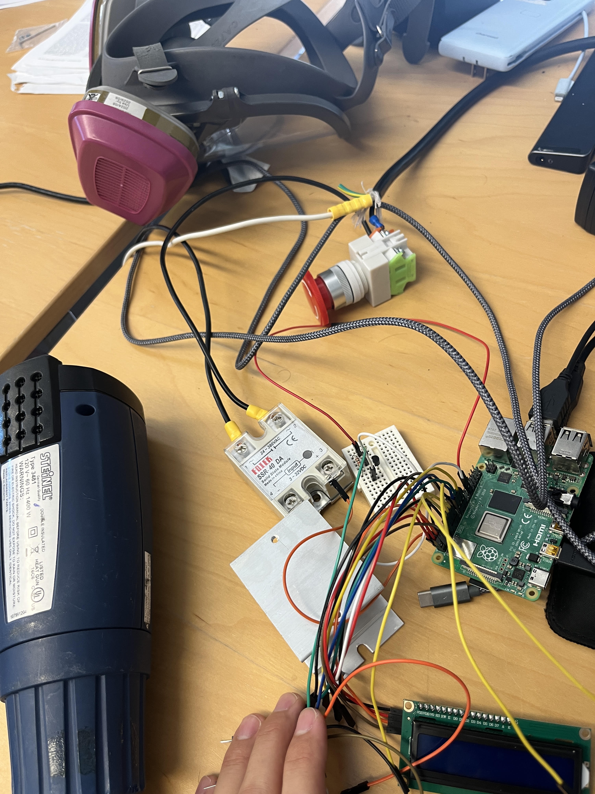

Flammability test apparatus
Designed an insulated flammability chamber around ASTM E681 specifications, combining temperature control, gas handling, and pressure monitoring. The apparatus is currently under development.
Design & contributions
Mechanical design meets instrumentation and control.
Chamber design
Designed an insulated chamber for ASTM E681 flammability-limit testing, incorporating an explosion-relief vent.
Temperature control
Developing a thermocouple-feedback heating system using Python on a Raspberry Pi 4, a solid-state relay, and an emergency shutoff switch. Responsible for component selection, wiring, assembly, and programming.
Gas & pressure monitoring
Designed a four-line gas, vacuum, and pressure manifold to enable real-time pressure monitoring during filling and evacuation, departing from the standard single-line approach.
Heating & Temperature Control
Designed and assembled the heating control system, selected the components, and wrote the Python control logic on a Raspberry Pi 4. Thermocouple feedback allows the Pi to switch a solid-state relay (SSR) on and off around a target temperature, controlling AC power to the heat guns. Integrated an emergency shutoff switch. The system is currently under development.
